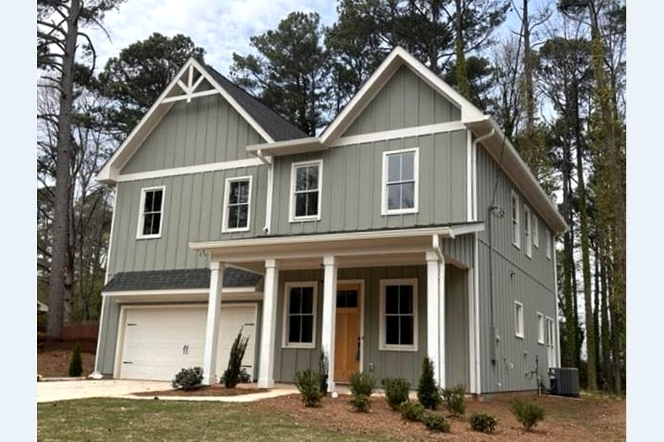
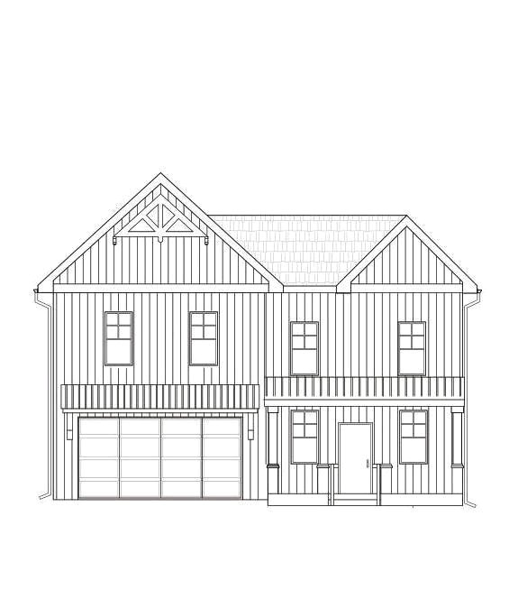
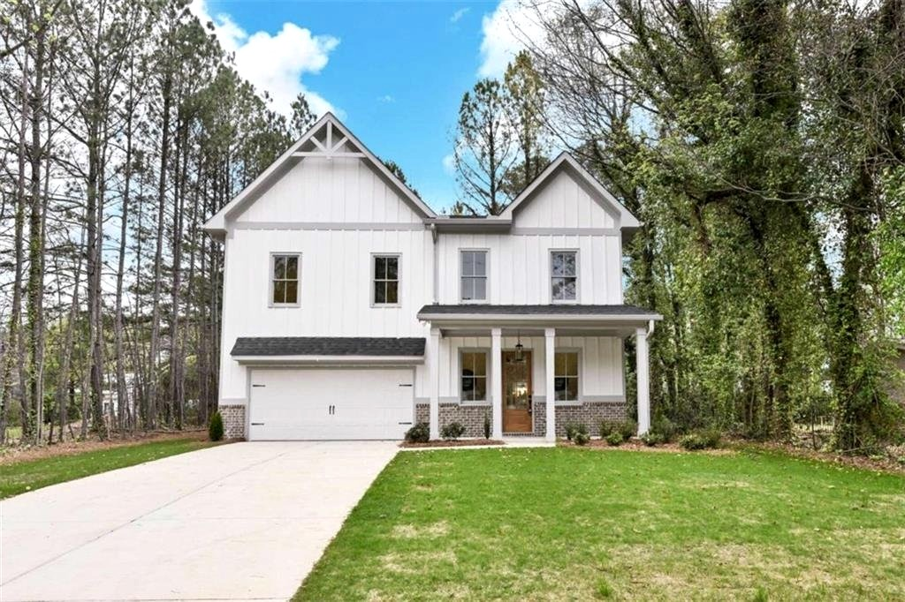

Co-Development · Completed
Residential Development
A four-home residential development executed through a joint venture arrangement. Madede provided structured capital and active construction oversight, with returns distributed on a shared basis at completion.



Structured capital with shared-return disposition.
Gwinnett County · Metro Atlanta MSA